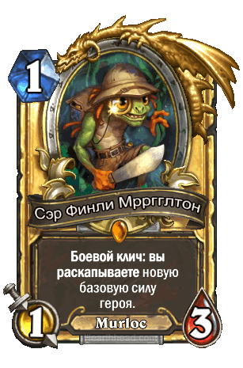

145 Просмотров
6 комментариев
Автор: Администратор
Название статьи
asdasdasd
ghbdtn
Мастер шестеренок — прекрасное существо за 1 ману, которое есть в каждой Мех-колоде. Эта карта имеет невероятный потенциал, чтобы нанести 3 урона в самом начале игры, Боевой робот — эта карта не имеет сильного потенциала, но она может хорошо размениваться с другими слабыми существами, что отлично помогает нам в игре против паладина и фейс-хантера, Огненная секира — против агро-колод всегда оставляйте в руке эту карту , потому что вам будет нужно захватывать контроль на столе, так что это замечательная карта для каждого воина, Удар героя — используйте эту карту для того, чтобы нанести летальный урон, или в некоторых моментах для размена с существами-провокаторами. 4 урона за 2 маны — это очень хорошо, Раздражатор — эта карта удивительна, потому что защищает ваш другой механизм или существо очень легко, и в конце игры может помочь вам выиграть игру, если он будет защищать Сквернобот, Механосборщик — эта карта может дать вам огромный потенциал разыграть много механизмов в начале игры, так что мы всегда оставляйте его на муллигане. Танк-паук — хороший 3-й дроп. Эта карта может помочь вам сделать много хороших разменов на ранней стадии игры, Гном-техник — это действительно хороший 3-й дроп для мех-колоды, потому что может стать 4/4 и дать вам запасную часть, которая может хорошо сработать с остальными картами (например дать невидимость на Сквернобот), Укус смерти — ещё одно оружие, чтобы делать выгодные размены в середине игры, или просто нанести 8 урона в лицо противнику, Смертельный удар — эта карта является дополнительным вариантом для победы. Это тоже самое, что Огненный шар, если у вас 12 или меньше здоровья. К тому же эта карта пригодня для контроля стола, Удар героя — эта замечательная карта напоминает Хаффер охотника, но имеет +1 к здоровью, хоть и стоит на одну ману больше. Это во многом помогает ему выживать, Пилотируемый крошшер — на мой взгляд, лучший механизм в игре. Ваши оппоненты не хотят убивать его, ведь с предсмертного хрипа может выпасть крайне неприятное существо. Ко всему этому эта карта помогает нам сохранить темп, Ржавый голем — это как получить 4/7 за 4 маны, но намного лучше, ведь вы можете дать бонус +2/+2 на вашего Механосборщик, чтобы получить дополнительный шанс поставить ваши механизмы за более выгодное количество маны. Если вы дадите +2/+2 на вашего Раздражатор, то получите 3/4 провокацию с Божественным щитом, чтобы защитить себя и своих существ, Арканитовый жнец — один из наших элементов победы, мы используем его в середине игры/поздней игре, чтобы просто нанести 10 урона в лицо (SMOrc), Заводной рыцарь — это как 6/6 за 5 маны, но только вы даёте +1/+1 на другой механизм, Сквернобот — это наша главная боевая единица для победы. Механизм 8/8 на пятый ход (возможно и на четвёртый, если на столе есть Механосборщик) создаёт огромнейшую опасность для противника, ведь на этот ход у него просто нечем убить нашего Сквернобот.
Мастер шестеренок — прекрасное существо за 1 ману, которое есть в каждой Мех-колоде. Эта карта имеет невероятный потенциал, чтобы нанести 3 урона в самом начале игры, Боевой робот — эта карта не имеет сильного потенциала, но она может хорошо размениваться с другими слабыми существами, что отлично помогает нам в игре против паладина и фейс-хантера, Огненная секира — против агро-колод всегда оставляйте в руке эту карту , потому что вам будет нужно захватывать контроль на столе, так что это замечательная карта для каждого воина, Удар героя — используйте эту карту для того, чтобы нанести летальный урон, или в некоторых моментах для размена с существами-провокаторами. 4 урона за 2 маны — это очень хорошо, Раздражатор — эта карта удивительна, потому что защищает ваш другой механизм или существо очень легко, и в конце игры может помочь вам выиграть игру, если он будет защищать Сквернобот, Механосборщик — эта карта может дать вам огромный потенциал разыграть много механизмов в начале игры, так что мы всегда оставляйте его на муллигане. Танк-паук — хороший 3-й дроп. Эта карта может помочь вам сделать много хороших разменов на ранней стадии игры, Гном-техник — это действительно хороший 3-й дроп для мех-колоды, потому что может стать 4/4 и дать вам запасную часть, которая может хорошо сработать с остальными картами (например дать невидимость на Сквернобот), Укус смерти — ещё одно оружие, чтобы делать выгодные размены в середине игры, или просто нанести 8 урона в лицо противнику, Смертельный удар — эта карта является дополнительным вариантом для победы. Это тоже самое, что Огненный шар, если у вас 12 или меньше здоровья. К тому же эта карта пригодня для контроля стола, Удар героя — эта замечательная карта напоминает Хаффер охотника, но имеет +1 к здоровью, хоть и стоит на одну ману больше. Это во многом помогает ему выживать, Пилотируемый крошшер — на мой взгляд, лучший механизм в игре. Ваши оппоненты не хотят убивать его, ведь с предсмертного хрипа может выпасть крайне неприятное существо. Ко всему этому эта карта помогает нам сохранить темп, Ржавый голем — это как получить 4/7 за 4 маны, но намного лучше, ведь вы можете дать бонус +2/+2 на вашего Механосборщик, чтобы получить дополнительный шанс поставить ваши механизмы за более выгодное количество маны. Если вы дадите +2/+2 на вашего Раздражатор, то получите 3/4 провокацию с Божественным щитом, чтобы защитить себя и своих существ, Арканитовый жнец — один из наших элементов победы, мы используем его в середине игры/поздней игре, чтобы просто нанести 10 урона в лицо (SMOrc), Заводной рыцарь — это как 6/6 за 5 маны, но только вы даёте +1/+1 на другой механизм, Сквернобот — это наша главная боевая единица для победы. Механизм 8/8 на пятый ход (возможно и на четвёртый, если на столе есть Механосборщик) создаёт огромнейшую опасность для противника, ведь на этот ход у него просто нечем убить нашего Сквернобот.
145 Просмотров
6 комментариев
Автор: Администратор
6 комментариев
Автор коментария
Тут ремя и дата
bla bla bla bla bla bla bla bla bla bla bla bla bla bla bla bla bla bla bla bla bla bla bla bla bla bla bla bla bla bla bla bla bla bla bla bla bla bla bla bla bla bla bla bla bla bla bla bla bla
Добавить комментарий